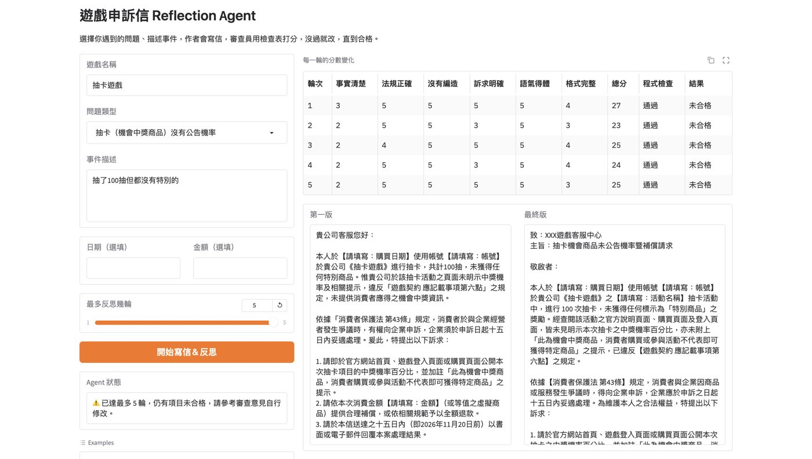
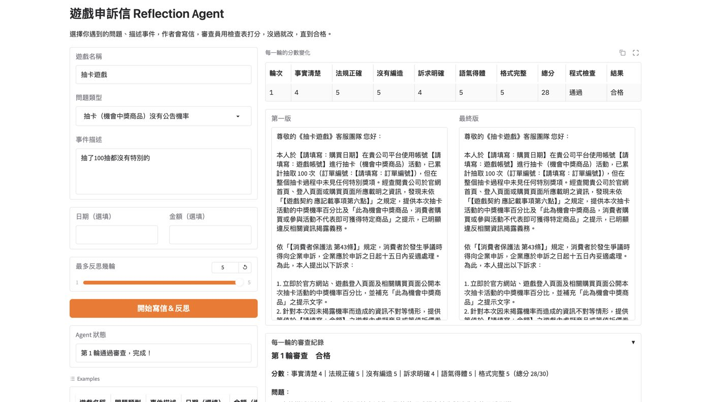

作業要做什麼
從 Reflection、Tool Use、Planning 中選一種 AI Agent 方法，修改老師的範例做成自己的版本，並用 Gradio 展示。
我做了什麼
- 選擇 Reflection：先產生結果，再自我檢查，依照回饋修改。
- 依問題類型（七日解約、機率未公告、停止營運⋯）只提供相關法條，避免 AI 引用不存在的規定。
- 作者寫申訴信；審查員用六項檢查表打 1～5 分並輸出 JSON；程式再檢查信中的條號是否都在提供的法條內。
- 六項都 ≥ 4 分且程式檢查通過才算合格，否則把意見交回作者改寫，最多 MAX_ROUNDS 輪。
- 和老師「固定改一次」的版本比較，並調整輪數與審查規則。


結果與發現
- 改良前，「抽了 100 抽都沒有特別的」這個案例跑滿 5 輪都不合格：審查員把【請填寫】當成事實不清楚扣分，但作者本來就沒有資料可補。
- 修改審查員規則（【請填寫】是正確做法、不可要求引用其他法規）後，同一個案例第 1 輪就合格。
- 改良後審查員反而偏寬鬆：列出問題卻還是給滿分，審查標準需要反覆測試調整。
- 反思不一定越改越好，用來反思的標準本身也要是對的。
心得
Reflection 的效果很依賴審查員的標準。我一開始以為讓 AI 自己檢查、自己改，結果一定會越來越好；實際跑了才發現，審查員把【請填寫】當成錯誤，信就跑了 5 輪都過不了。
修正之後又變成審查員太寬鬆，可見審查標準需要反覆測試調整。設計 Agent 不只要讓 AI 會反省，也要確定它用來反省的標準是對的。
AI 協助說明
Agent 程式、審查員規則的修正與觀察初稿由 Claude 協助；選擇 Agent 類型、在 Colab 執行測試、發現審查員卡住的問題、截圖與核對由我完成；心得初稿由 Claude 依我的作業內容與執行結果草擬，我確認後採用。